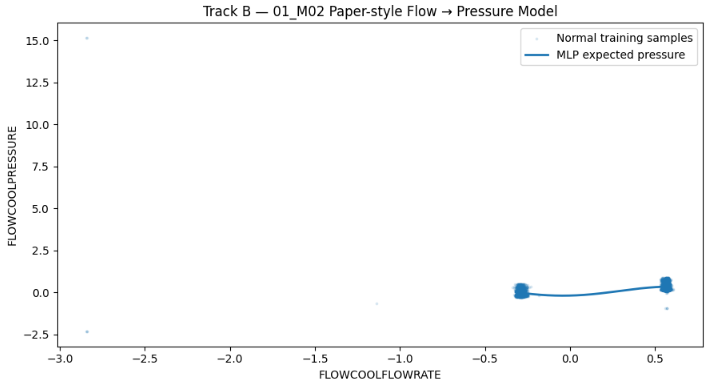

00 · PROJECT OVERVIEW
프로젝트 개요: 센서 데이터를 활용한 반도체 식각 설비의 고장 시점 예측
이 프로젝트에서는 PHM Society 2018 Data Challenge에서 공개한 Ion Mill Etch(반도체 식각) 설비 데이터를 사용했다. Ion Mill Etch는 이온빔을 웨이퍼 표면에 조사해 재료를 제거하는 식각 설비이며, 공개 데이터에는 여러 장비의 운전조건과 압력·전류·전압·유량 등 시계열 센서값이 포함되어 있다.
공식 Challenge는 고장 진단과 TTF/RUL 예측을 목표로 한다. 본 프로젝트에서는 먼저 pressure drop 고장에 대해 일정 시간 안에 고장이 발생하는지 분류하는 방식으로 조기예측 가능성을 확인했다. 10분·15분·30분 예측 범위를 Validation에서 비교한 뒤 30분을 후속 분석 범위로 고정했다. 이후 pressure high 고장에서는 공식 Challenge의 RUL 문제와 같은 방향으로 고장까지 남은 시간을 직접 예측했다.
등장 용어
- Pressure Dropped Below Limit: 압력 저하
- Pressure Too High: 압력 과다
- Flowcool leak: 공식 고장 유형이나 본 프로젝트에서는 미분석
- TTF: 원본 데이터에 제공된 고장까지 남은 시간
- RUL: 모델이 예측하는 잔여수명
- 고장 사례가 적은 불균형 데이터의 분류 성능 지표
- 값이 높을수록 고장 구분 능력 우수
- 고장 사례 단위로 Train/Test 완전 분리
- 같은 고장 데이터의 중복 방지
프로젝트는 세 단계로 진행했다. 첫 번째는 고장 발생 여부를 미리 맞히는 실험, 두 번째는 고장까지 남은 시간을 예측하는 실험, 세 번째는 새로운 고장 사례만으로 다시 성능을 검증하는 실험이다.
각 단계에서 성능 숫자만 보고 다음 모델로 넘어가지 않았다. 결과가 약하면 데이터가 왜 달라졌는지 확인했고, 결과가 너무 좋으면 학습 데이터와 시험 데이터가 실제로 독립적인지 다시 확인했다. 이 과정에서 최종적으로 모델 자체보다 평가 구조를 신뢰할 수 있게 만드는 것이 더 중요하다는 점에 초점을 맞췄다.
01 · EARLY FAILURE PREDICTION
1단계: 센서 데이터 기반 고장 발생 예측
첫 번째로 분석한 대상은 공식 Challenge의 고장 유형 중 하나인 FlowCool Pressure Dropped Below Limit(압력 저하 고장)이었다. 설비가 고장 난 뒤 원인을 찾는 것이 아니라, 고장 전에 나타나는 센서 변화를 이용해 미리 위험을 감지할 수 있는지 확인했다.
먼저 현재까지의 설비 상태를 보고 설정한 시간 범위 안에 압력 저하 고장이 발생하는지를 0/1로 분류했다. 예측 범위는 이후 10분·15분·30분을 비교해 결정했다.
현재 센서값뿐 아니라 ‘변화 추세’까지 모델에 입력
처음에는 현재 시점의 센서값만 XGBoost에 넣었다. 이후 이전 센서값(lag), 일정 구간의 통계값(rolling), 변화량(derivative)처럼 시간에 따른 변화를 표현한 temporal feature를 추가했다.
평가에는 PR-AUC를 사용했다. 전체 데이터 중 고장 직전 샘플의 비율이 매우 낮기 때문에 단순 accuracy보다 precision과 recall의 균형을 보는 PR-AUC가 더 적합하다고 봤다. 기본 모델의 Validation PR-AUC는 0.01319였고, temporal feature를 추가한 뒤 0.01663까지 올라갔다.
| Class weight | Validation PR-AUC |
|---|---|
| No weight | 0.01663 |
| Sqrt weight | 0.01402 |
| Full weight | 0.01214 |
불균형 데이터라고 해서 positive class에 큰 weight를 주는 것이 항상 도움이 되지는 않았다. 이후 실험에서는 Validation에서 가장 나았던 no-weight 설정을 유지했다.
고장을 얼마나 미리 예측할 것인지 결정
| Prediction horizon | Validation PR-AUC | Random baseline 대비 |
|---|---|---|
| 10 min | 0.00385 | 2.39× |
| 15 min | 0.00511 | 1.91× |
| 30 min | 0.01798 | 2.08× |
10분 예측은 random baseline에 대한 상대적인 lift가 컸지만 양성 표본 자체가 적고 절대 PR-AUC도 낮았다. 세 후보 가운데 Validation PR-AUC가 가장 높았던 30분을 이후 분석 범위로 고정했다. Test 결과를 본 뒤 horizon을 다시 바꾸지는 않았다.
센서값에 공정 진행정보(stage·recipe·step)도 추가
센서와 temporal feature만으로 충분한지 보기 위해 stage,
recipe, recipe_step을 categorical feature로 추가했다.
Test는 아직 사용하지 않은 상태에서 세 조합을 비교했다.
| 입력 | Validation PR-AUC | Random baseline 대비 |
|---|---|---|
| Context only | 0.00942 | 1.09× |
| Sensor + Temporal | 0.01798 | 2.08× |
| Sensor + Temporal + Context | 0.02185 | 2.52× |
Test 결과: 조기 경보 성능 제한
Threshold도 Test에서 맞추지 않고 Validation에서 F1이 가장 높도록 먼저 정했다. 고정된 모델과 threshold를 Test에 한 번 적용했다.
| Metric | Result |
|---|---|
| Test positives | 539 |
| PR-AUC | 0.025242 |
| Random PR baseline | 0.016123 |
| ROC-AUC | 0.6268 |
| Precision | 0.0185 |
| Recall | 0.0482 |
| F1 | 0.0267 |
| TP / FP / FN / TN | 26 / 1,379 / 513 / 31,513 |
무작위 예측보다 약한 신호는 있었지만, 539개의 positive 중 26개만 잡았고 false positive도 1,379개였다.
· Precision 1.85%, Recall 4.82%
· 실제 경보 모델로 활용하기에는 성능 제한
중간에 event 단위로도 다시 만들어본 이유
성능 저하 원인 점검: 시간에 따른 데이터 분포 변화
모델을 더 튜닝하기 전에 데이터 자체가 달라진 것은 아닌지 확인했다. 과거의 정상 운전 데이터와 미래의 정상 운전 데이터만 가져와 두 시기를 서로 구분하는 별도의 분류 모델(domain classifier)을 만들었다. 고장을 맞히는 모델이 아니라 정상 데이터가 어느 시기에 측정된 것인지를 맞히는 모델이다.
두 시기를 쉽게 구분할 수 있다면, 모델 성능 저하의 원인이 단순한 파라미터 문제가 아니라 시간에 따른 운전조건 변화, 즉 distribution shift일 가능성을 의심할 수 있다. 어떤 변수가 이 구분에 기여했는지는 SHAP으로 확인했다. SHAP은 모델의 출력이 어떤 입력변수에 의해 얼마나 달라졌는지를 해석하는 방법이다.


정상 상태 자체의 센서 분포가 시기별로 달랐다. Flow와 pressure 관계를 Train 정상 데이터로 학습했을 때도 Validation 정상 구간에 학습 시기에서 보기 어려웠던 운전영역이 섞여 있었다. 즉 압력 저하 고장의 약한 Test 성능을 단순히 XGBoost 파라미터 문제로만 보기 어려웠다.
- 압력 저하 고장 조기예측 성능 제한
- 시간에 따른 정상 데이터 분포 변화 확인
- 압력 과다 고장 대상 RUL 예측 문제로 확장
02 · REMAINING LIFE PREDICTION
2단계: 고장까지 남은 시간(RUL) 예측
두 번째로는 공식 Challenge의 또 다른 고장 유형인 Flowcool Pressure Too High Check Flowcool Pump(압력 과다 고장)을 대상으로 했다. 이번에는 단순히 “고장/정상”을 나누는 대신, 설비가 고장 나기까지 남은 시간을 숫자로 예측하는 문제로 바꿨다.
여기서는 “곧 고장이 발생하는가”를 맞히는 분류 문제 대신, 현재 시점에서 고장까지 얼마나 시간이 남았는지를 직접 예측했다. 이 남은 시간을 RUL(Remaining Useful Life)이라고 부른다.
20개 Tool의 fault event를 먼저 확인했고, 선행논문의 예시 장비인
01_M02에는 해당 fault event가 40개 있었다.
하지만 FIXTURESHUTTERPOSITION = 1인 운전상태로 제한하고 TTF와 연결하자
실제로 연결되는 future event는 9개, Normal과 Fault 구간을 모두 갖는 trajectory는 3개뿐이었다.
fault 파일의 고장 수와 실제 run-to-failure 분석에 쓸 수 있는 trajectory 수는 달랐다.
정상적인 유량–압력 관계에서 벗어나는 정도를 추가 정보로 생성
참고 논문에서는 정상 상태라면 FlowCool 유량과 압력 사이에 일정한 관계가 있을 것이라고 보고, 유량으로부터 정상적으로 예상되는 압력을 MLP로 계산한다. 여기서 MLP는 입력과 출력 사이의 비선형 관계를 학습하는 간단한 신경망이다.
예상 압력과 실제 압력의 차이를 residual(잔차)로 두었다.
residual = predicted pressure − actual pressure.
이 차이가 커지면 정상적인 유량-압력 관계에서 벗어난 상태일 가능성이 있다는 아이디어다.

Train / Validation / Test의 R²는 약 0.49~0.50으로 비슷했다. absolute residual을 단독 feature로 Normal/Fault에 대해 본 진단 ROC-AUC는 0.9075였지만, 이 값은 최종 분류 성능으로 사용하지 않았다.
고장에 가까워지는 상태를 먼저 구분해 경고 시점 설정
다음 단계에서는 Random Forest(RF)로 정상 상태와 고장에 가까운 상태를 분류했다. Random Forest는 여러 개의 decision tree를 묶어 예측하는 모델이다. 참고 논문의 해당 fault ×1000 oversampling은 계산량 때문에 class weight로 근사했다.
OOB(Out-of-Bag)는 각 tree 학습에 사용되지 않은 샘플로 내부 검증을 하는 방식이다. Train/OOB에서는 Original과 +Residual 모델 모두 거의 완벽한 결과가 나왔고, residual은 17개 feature 중 RF importance 5위였다.
이후 failure probability를 150 sample의 causal trailing average로 smoothing하고,
P(failure) > 0.5를 warning으로 정의했다.
Fault-state를 포함한 5개 event 모두 warning이 발생했지만,
우리가 정한 TTF < 2000 s 영역에 들어가기 전에 경고된 event는 2개였다.
경고가 발생한 뒤의 센서 흐름으로 고장까지 남은 시간 예측
Warning 이후 60개 sample을 하나의 sequence로 만들고, 참고 논문과 같은 2-layer GRU, 64 nodes/layer 구조로 RUL을 예측했다. Original 16개 feature와 residual을 추가한 17개 feature를 비교했다.

| Paper-style Test | RMSE | MAE | SMAPE |
|---|---|---|---|
| Original 16 features | 31.01 s | 24.40 s | 6.23% |
| + Residual | 62.73 s | 48.93 s | 9.86% |
Original GRU의 숫자는 매우 좋았지만, 참고 논문에서 보고된 residual 추가 성능 개선은 재현되지 않았다. 이보다 더 중요한 문제는 window split 자체에서 발견됐다.
좋아 보이던 성능에 Train/Test 데이터 중복이 있는지 재확인
GRU는 한 시점의 센서값 하나가 아니라 최근 여러 시점의 흐름을 한 번에 본다. 그래서 연속된 60개 측정값을 하나의 입력으로 묶는 sliding window를 만들었다.
문제는 stride를 1로 두면 첫 window가 1~60번째 측정값, 다음 window가 2~61번째 측정값이 된다는 점이다. 두 입력은 60개 중 59개를 공유한다. window 단위 random split을 한 뒤 원본 row 기준으로 다시 계산했다.
Test window가 203개 있어도 203개의 독립적인 고장을 평가한 것이 아니었다. 같은 fault trajectory의 인접 조각들이 Train과 Test에 함께 들어가 있었다.
· 학습 때 본 데이터와 사실상 중복
· RMSE 31초를 새로운 고장 일반화 성능으로 해석하기 어려움
- Window 기준 random split의 데이터 중복 확인
- 좋은 수치와 실제 일반화 성능 구분 필요
- 고장 사례 단위 Train/Test 분리로 평가 방식 재설계
03 · STRICT RE-EVALUATION
3단계: 새로운 고장 사례 기반 성능 재검증
모델 성능을 보기 전에 분석 대상 설비부터 고정
압력 과다 고장 event가 비교적 많은 6개 Tool에 같은 FSP=1 availability audit을 적용했다. 단순 fault 수가 아니라 Normal과 Fault 구간을 모두 갖는 usable trajectory 수로 순위를 정했다.
| Tool | Mapped events | Fault-state events | Normal+Fault events |
|---|---|---|---|
| 08_M01 | 31 | 18 | 11 |
| 09_M02 | 37 | 8 | 7 |
| 03_M01 | 34 | 6 | 4 |
| 03_M02 | 48 | 4 | 4 |
| 01_M02 | 9 | 5 | 3 |
| 02_M02 | 27 | 2 | 2 |
08_M01이 usable Normal+Fault event 11개로 가장 많았다. 이 기준은 모델 성능을 보기 전에 적용했고, 이후 결과가 어떻든 Tool을 다시 바꾸지 않았다.
한 고장 사례 전체가 Train과 Test에 동시에 들어가지 않도록 분리
여기서부터 평가 단위를 window가 아니라 fault event 한 건 전체로 바꿨다. 같은 고장 사례에서 잘라낸 데이터가 Train과 Test 양쪽에 동시에 들어가지 않도록 하기 위해서다.
11개의 usable trajectory를 발생 순서대로
Train 7 / Validation 1 / Test 3으로 고정했다.
RUL 범위도 앞선 정의와 같은 TTF < 2000 s로 유지했다.
60개 연속 sample의 실제 timestamp span은 약 236초였다.
생성된 window는 Train 1,974 / Validation 353 / Test 361이었지만, 여기서 독립 표본 수를 window 수로 해석하지 않았다. 핵심 평가 단위는 서로 다른 fault trajectory였다.
처음 보는 미래 고장에서 고장까지 남은 시간 예측
모델 구조도 새로 탐색하지 않고 Track B와 같은 2-layer GRU(64 nodes/layer)를 사용했다. 16개 numeric state feature를 입력으로 사용했고 parameter count는 40,769개였다. Baseline은 센서를 보지 않고 Train RUL 중앙값인 762초를 항상 출력하는 모델이다.
| Event-balanced strict Test | Train-median baseline | GRU |
|---|---|---|
| RMSE | 543.82 s | 203.85 s |
| MAE | 474.05 s | 171.73 s |
| SMAPE | 64.44% | 36.44% |
· Event-balanced RMSE: 543.82 s → 203.85 s
· Train-median baseline 대비 RMSE 62.52% 감소
· 독립 Test 고장 2건 → 소규모 검증 결과로 해석
쉽게 보면, 아무 센서도 보지 않고 항상 같은 시간을 예측하는 기준모델보다 GRU가 두 개의 새로운 고장 사례에서 실제 고장 시점에 더 가까운 값을 예측했다. 다만 독립적인 Test 고장이 2건뿐이므로, 이 결과를 현장 적용 수준의 성능으로 확대해석하지 않았다.

| Unseen Test event | Windows | GRU RMSE | Baseline RMSE | GRU SMAPE | Baseline SMAPE |
|---|---|---|---|---|---|
| 19844812 | 173 | 127.79 s | 643.06 s | 7.80% | 50.08% |
| 19898846 | 188 | 279.90 s | 444.57 s | 65.08% | 78.80% |
평가 한계: 계획한 Test 3건 중 실제 평가 가능한 고장은 2건
처음 계획한 Test event는 3개였다. 마지막 event 28440806은
TTF < 2000 s 구간에 65개 row가 있었지만 두 segment로 나뉘었고,
가장 긴 연속 segment가 50개였다. 따라서 필요한 60-sample sequence를 만들 수 없었다.
이 event는 모델 결과가 나빠서 제외한 것이 아니다. 모델을 돌리기 전 sequence availability 단계에서 이미 평가 불가능했다. 따라서 최종 결과는 두 개의 완전히 분리된 미래 fault trajectory에 대한 작은 규모의 strict stress test로 해석했다.
04 · MODEL INTERPRETATION
4단계: 모델의 센서 변수 의존도 확인
마지막에는 모델을 더 학습하지 않고 그대로 고정한 뒤, 입력 feature를 하나씩 가려보는 feature occlusion을 했다. 특정 센서를 Train 평균값으로 바꿨을 때 오차가 크게 증가한다면, 현재 GRU가 그 센서의 정보에 많이 의존하고 있다는 뜻이다.
따라서 이 결과는 모델 의존도를 보여줄 뿐, 해당 센서가 고장의 물리적 원인이라는 뜻은 아니다.
| Frozen-GRU occlusion | Δ Macro RMSE | RMSE가 악화된 Test event |
|---|---|---|
| ETCHSUPPRESSORCURRENT | +476.85 s | 2 / 2 |
| ETCHSOURCEUSAGE | +183.02 s | 2 / 2 |
| IONGAUGEPRESSURE | +142.90 s | 2 / 2 |
| ETCHAUX2SOURCETIMER | +141.24 s | 2 / 2 |
| FIXTURETILTANGLE | +79.81 s | 2 / 2 |
| ACTUALSTEPDURATION | +74.70 s | 2 / 2 |
고장 전에 크게 변하는 센서와 AI가 의존하는 센서는 같지 않을 수 있었다
모델 학습 전에 Train event만 사용해 near-fault 변화를 따로 확인했을 때
FLOWCOOLPRESSURE는 7개 Train event 모두에서 고장에 가까워질수록 증가했다.
그러나 frozen GRU에서 이 변수를 가렸을 때 Macro RMSE는 오히려 10.86초 감소했다.
반대로 ETCHSUPPRESSORCURRENT는 Train-only degradation 분석에서도 변화가 관찰됐고,
occlusion에서는 가장 큰 모델 의존도를 보였다.
· 모델 의존도가 높은 변수 ≠ 실제 고장의 물리적 원인
· 인과관계가 아닌 모델·데이터 수준의 연관성으로 해석
CONCLUSION
프로젝트 결과 및 해석
처음에는 XGBoost로 고장을 조금이라도 더 잘 맞히는 것이 목표였다. 센서값에 temporal feature를 추가하고, class weight를 바꾸고, prediction horizon을 비교하고, 공정 context도 넣어봤다. Test에서 약한 신호가 있었지만 실제 경보 성능은 충분하지 않았다.
그래서 데이터를 다시 봤다. 과거와 미래의 정상 운전 상태 자체가 달랐고, 선행연구 방법을 따라가면서는 반대로 너무 좋아 보이는 결과가 나왔다. 그 숫자를 다시 확인하다가 Train과 Test가 거의 같은 raw data를 공유한다는 것도 발견했다.
마지막에는 모델을 더 복잡하게 만드는 대신 평가 조건부터 고정했다. 같은 고장 사례가 학습과 시험에 함께 들어가지 않도록 event 단위로 나누고, 모델을 보기 전에 Tool, 예측 범위(horizon), 입력 길이(sequence length)를 정한 뒤 다시 실험했다.
작은 규모이지만 완전히 분리된 두 미래 fault trajectory 모두에서 GRU가 단순 baseline보다 낮은 RUL 오차를 보였다. 동시에 Test 3건 중 1건은 연속 history 부족으로 평가할 수 없었다는 제한도 그대로 남겼다.
왜 이런 결과가 나왔는지 확인하고 다시 검증하는 과정까지 수행했다.
데이터 출처: PHM Society, 2018 PHM Data Challenge — Ion Mill Etch. 본 프로젝트에서 사용한 공개 데이터의 원 출처. 공식 페이지
활용 방식: 2018년 Challenge 참가 결과가 아니라, 공개된 과거 데이터셋을 활용해 별도로 수행한 개인 분석 프로젝트.
참고 논문: S. Wu, Y. Jiang, H. Luo, and S. Yin, “Remaining useful life prediction for ion etching machine cooling system using deep recurrent neural network-based approaches,” Control Engineering Practice, vol. 109, 104748, 2021. DOI: 10.1016/j.conengprac.2021.104748
해석 범위: 최종 Track A의 RUL은 TTF < 2000 s 구간에 한정되며, strict Test의 독립 미래 fault event는 평가 가능한 2건이다.
변수 해석: SHAP / RF importance / occlusion은 모델 또는 데이터와의 연관성을 보여줄 뿐 고장의 인과 원인을 입증하지 않는다.